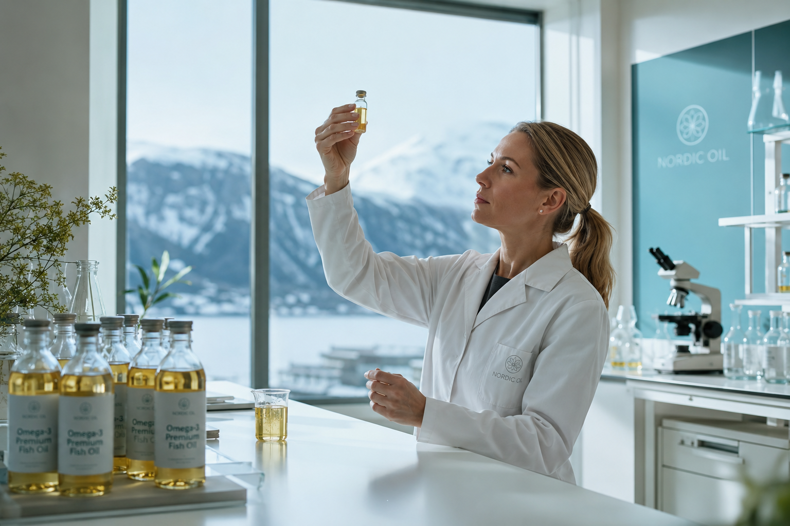

YAC, premier distributeur EQOLOGY en France, rend accessibles aux naturopathes des oméga-3 d'excellence scandinave, avec des outils de suivi concrets pour leurs consultants. Une démarche fondée sur la science, la traçabilité et l'approche naturelle de la santé.

Fondée en Norvège
EQOLOGY est un laboratoire norvégien spécialisé dans les oméga-3 de qualité supérieure. Chaque produit est issu de pêche durable, certifié Friend of the Sea, et testé par des laboratoires indépendants pour garantir pureté et efficacité.
Des oméga-3 testés en laboratoire indépendant, sans métaux lourds, sans PCB, sans dioxines. La transparence totale sur chaque lot.
Certifié Friend of the Sea. Des ressources marines respectées, une traçabilité complète du bateau au flacon.
Le Balance Test permet de mesurer objectivement l'équilibre oméga-6/oméga-3 de chaque consultant, avant et après la cure.
YAC, premier distributeur EQOLOGY en France, a construit un pont entre l'excellence scandinave et la pratique quotidienne des naturopathes. Ce partenariat repose sur trois piliers.
Grâce au Balance Test, chaque naturopathe peut montrer à ses consultants une amélioration concrète et chiffrée de leur équilibre en acides gras. Fini les promesses vagues : place aux données.
Le suivi par test crée un cycle vertueux : le consultant revient pour mesurer ses progrès, renforce sa confiance envers le praticien et poursuit naturellement son protocole.
Halal, sans gluten, sans lactose, sans OGM. Des produits inclusifs qui respectent les convictions et contraintes de chaque consultant, en cohérence avec l'approche holistique de la naturopathie.
"Nous avons choisi de travailler avec les naturopathes parce qu'ils partagent notre vision : la santé ne se résume pas à un produit, c'est un accompagnement global."
YAC Distribution
Distributeur officiel EQOLOGY France
Les naturopathes sont les praticiens les mieux placés pour recommander une supplémentation en oméga-3. Leur approche globale, centrée sur l'hygiène de vie et l'alimentation, est parfaitement alignée avec la philosophie d'EQOLOGY.
Contrairement à une simple vente de compléments, le partenariat EQOLOGY offre aux naturopathes un véritable outil de suivi : le Balance Test. Ce test sanguin à domicile permet de mesurer le ratio oméga-6/oméga-3 et de personnaliser les recommandations.
C'est cette combinaison unique — produit de qualité supérieure + mesure objective — qui fait la force de ce partenariat et transforme la relation praticien-consultant.
Que vous soyez naturopathe en exercice ou en formation, nous serions ravis d'échanger avec vous.
Prendre rendez-vousRépondez à quelques questions et un conseiller YAC vous rappelle sous 24h pour un échange stratégique personnalisé.